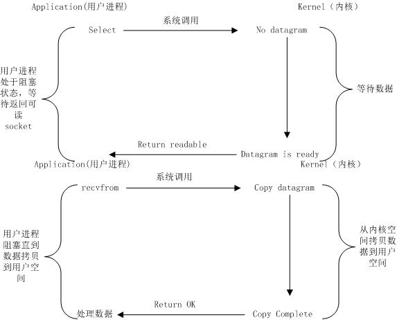

在看了SpringBoot上面可以调用异步方法后，觉得很是神奇，故想从头缕缕到底什么是异步方法，于是有了这篇文章，本人非计算机出身，如有错误，请指正，谢谢。
从异步IO说起
说起异步IO，相信大家都不陌生，我是通过2003-unix-network-programming这本书了解的。下面讲讲异步IO到底是怎么回事。
同步IO
首先讲讲同步IO,我理解的同步就是说消息的获取是要通过用户进程主动获取到的，不管在这途中用户进程是否处于阻塞状态（其实Blocking I/O、NonBlocking I/O,I/O multiplexing都是处于同步I/O）。下图为I/O multiplexing的工作流程图。

由图中可以知道，该复用型I/O是阻塞的，在调用select和recefrom系统调用函数时候用户进程挂起，这是同步的I/O.
异步IO
而Async I/O则是非阻塞，且信息的获取是通过内核传送告知的，用户程序使用handler程序进行处理。
通过对异步I/O的特性推广到异步方法，可知异步方法其实是说进程调用异步方法的时候不会阻塞用户进程，或者说这个调用方法直接return，但是此时并没有结果。这样用户进程可以执行其他的代码，当异步方法调用完毕后可以通过内核通知或者通过回调函数进行处理。
JavaScript
在学习前端知识的时候，对JavaScript的运行机制并没有做深入的理解，随着在编写前端JS代码的时候发现明明调用了方法请求并有对结果进行处理，但是为什么拿到的结果却是为空？后面才知道其实JS的webAPI函数很多是异步调用，不能够直接通过看代码表面顺序来猜想程序的执行顺序。那么JS在执行代码的时候是一个什么机制呢？
大家都知道JavaScript是单线程执行的，在一个时间只能够执行固定的代码，那是如何实现异步调用的呢？准确的说JavaScript的执行引擎是单线程的，也就是说执行JavaScript代码的线程只有一个，但是在异步调用时实际上存在其他的工作线程。例如：处理AJAX请求的线程、处理DOM事件的线程、定时器线程、读写文件的线程等等。也就是说JavaScript实现异步调用是要操作系统线程资源的支持，并不是通过单单一个线程来处理的。
在执行JavaScript代码的时候，执行引擎是先执行同步代码，把栈给清空后才会执行异步方法，一般异步方法的执行通过是一个回调函数和所携带的参数组成。也就是说执行引擎在调用异步方法的时候直接返回并往下执行同步代码，与此同时异步方法的真正执行是通过工作线程来完成，当异步方法执行完后，携带的结果和回调函数组成一个消息并传入消息队列中去，等JS引擎执行完同步代码的时候通过事件循环开始从消息队列中取回调函数并执行。其工作流程如下：
事件循环执行消息队列的回调函数要满足两个条件：首先栈需要时清空状态，还有就是消息队列中有消息在等待。
也就是说JavaScript的异步方法调用是通过回调函数触发的，当然中间会涉及到消息队列。
SpringBoot
spring提供了两种调度机制：一种是定时任务@Schedule，另外一种是异步方法调用，一般使用注解@Async来做配置。有时候我们会调用一些特殊的任务，任务会比较耗时，这时候我们就需要用这类的异步任务啦，调用后就让他去跑，不堵塞主线程，我们继续干别的。
还有就是异步调用的时候可以返回一个结果，使用Future接口接受数据，可以通过主线程不断的轮询Future来获取异步调用的返回值，也可以使用ListenableFuture类来接受返回值，还可以配置回调函数来处理结果。